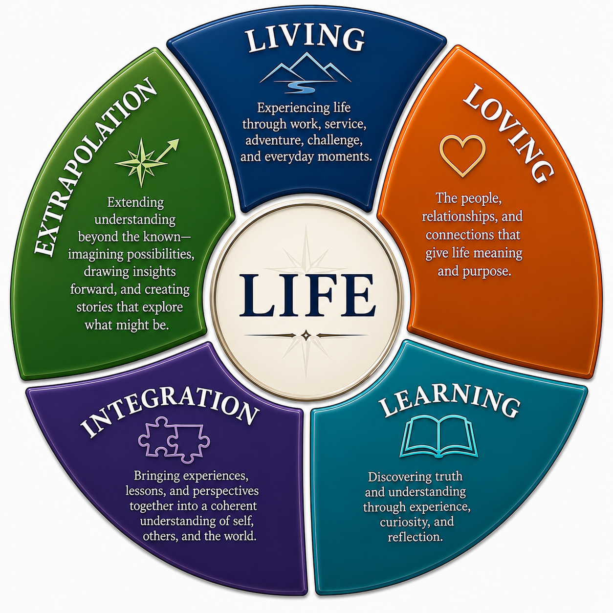

Writing
Writing
My writing draws from a lifetime of experience—work, military service, family, relationships, curiosity, and reflection. It comes from living and learning, bringing experiences and lessons together to better understand what was, and sometimes carrying those insights forward to imagine what might be.

Poetry
Published poems and current poetry projects. An entry can link to the original publication, to a page on this site, or have no link at all.